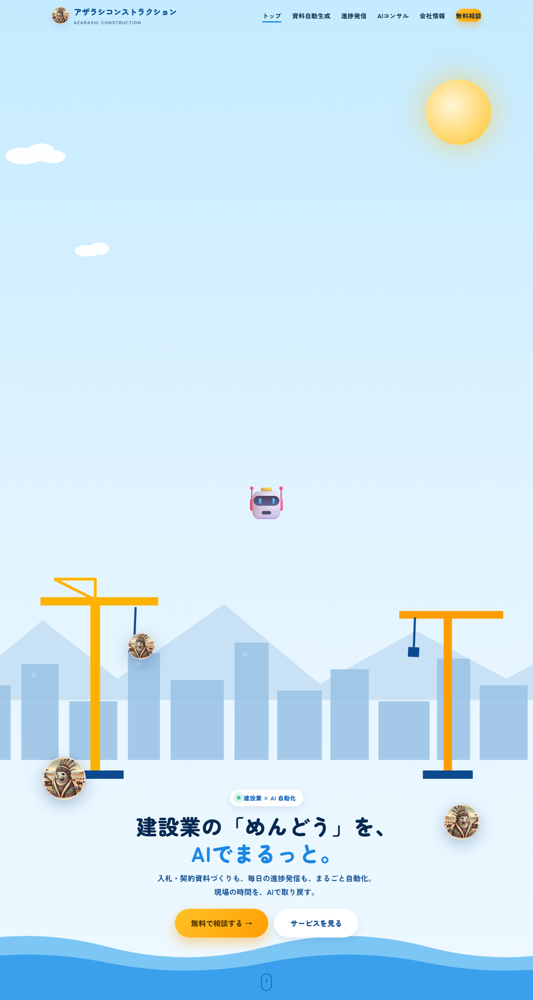
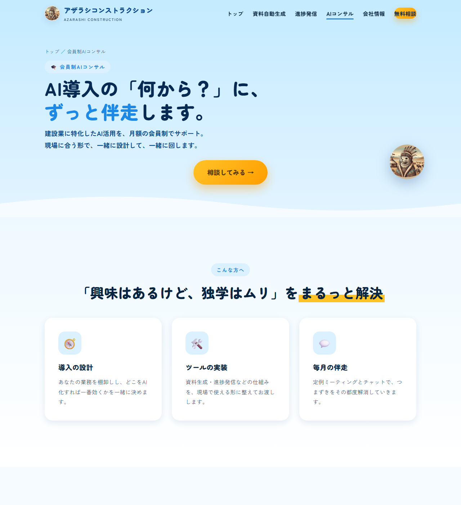

回る3Dロボットアーム
ヒーロー中央にSplineの3Dを配置。マウスに反応し、建設の「動き」を象徴的に見せます。
Spline / WebGL
硬派な建設業界に、海のように軽やかなWeb体験を。3Dロボットアームが回り、スクロールで現場が完成へ向かう。「アザラシ建設」は、建設×AI自動化を表現したランディングページの実例です。
テンプレ的なコーポレートサイトばかりで、若い人材や新規顧客の心が動かない。
「AIで自動化できます」と言葉で書いても、体験として伝わらず差別化にならない。
3Dや動きのあるサイトは外注すると高額。実例がないと費用感もわからない。
ヒーロー中央にSplineの3Dを配置。マウスに反応し、建設の「動き」を象徴的に見せます。
更地 → 基礎 → 鉄骨 → 完成。スクロールに連れて建物が積み上がる段階演出。
青いラグーンと建設現場を融合。アザラシのマスコットが各所に登場し、親しみを生みます。
トップ・資料・進捗発信・コンサル・会社情報・問い合わせ。事業の全体像を1サイトで。
3Dロボットアームのトップから、コンサル紹介ページまで。海と現場の世界観で統一しています。

